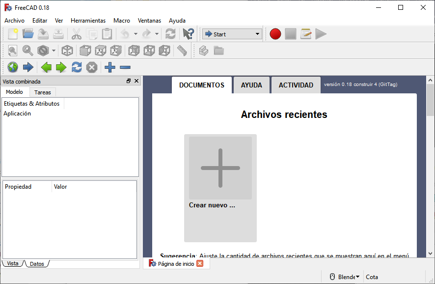
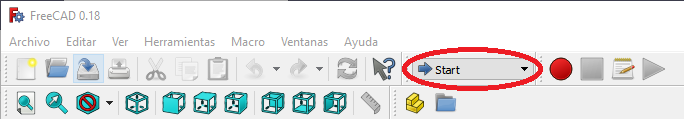
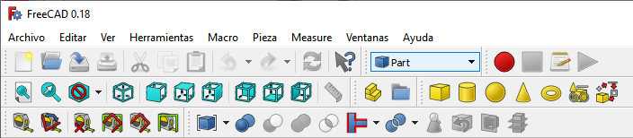
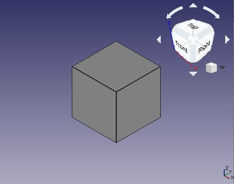
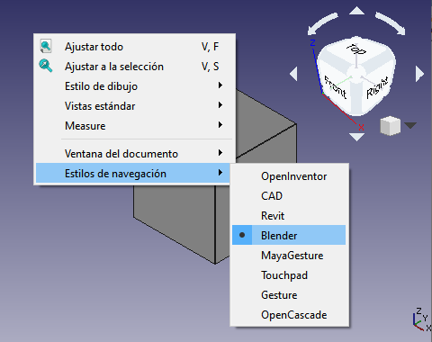
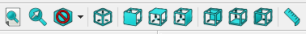

1. Introduction to FreeCAD¶
FreeCAD is a free computer-aided design (CAD) program. Allows you to design objects in three dimensions. These objects can later be printed on a 3D printer.
To carry out this tutorial, version 0.18 of FreeCAD has been used.
The tutorials that follow are based on the video tutorials that ObiJuan (Juan González Gómez) has published on YouTube. The full list of ObiJuan tutorials is on the FreeCAD Video Tutorials page.
Now we are going to open the FreeCAD application, which has the following icon.

Once opened, the main FreeCAD window is as follows.
Then we click with the mouse on the icon to create a new document
 or we select in the menu
or we select in the menu File... New.A new tab will open with an empty document, where we can start designing.
In the FreeCAD program there are several Work Benches also called Workbench in English. By default, opening a new file selects the Start workbench.
Now we are going to select the Part workbench to start designing objects in 3 dimensions.
We can see how the toolbar icons have changed to adapt to the new Part workbench.
Clicking on the solid objects toolbar will bring up the selected object on the screen.

Cubes, cylinders, spheres, cones, tori, prisms, or more complex pieces can be created parametrically.
To begin we are going to select a cube that will be seen on the screen as follows.
Now we are going to choose the navigation style to display the cube on the screen. With the right mouse button we select navigation style... of type Blender.
To rotate the cube, press the middle button while moving the mouse.
To zoom out and zoom in we will rotate the mouse wheel.
To move the cube we will press the central button at the same time as the letter Shift on the keyboard, while we move the mouse.
With the Display toolbar we can also center the object on the screen or select the view we want to display.

Exercises¶
Open FreeCAD and create a new document with a cube and a cylinder. Move the pieces around the screen and select all their different faces by clicking on them.
Video-tutorial¶
Video: Introduction.